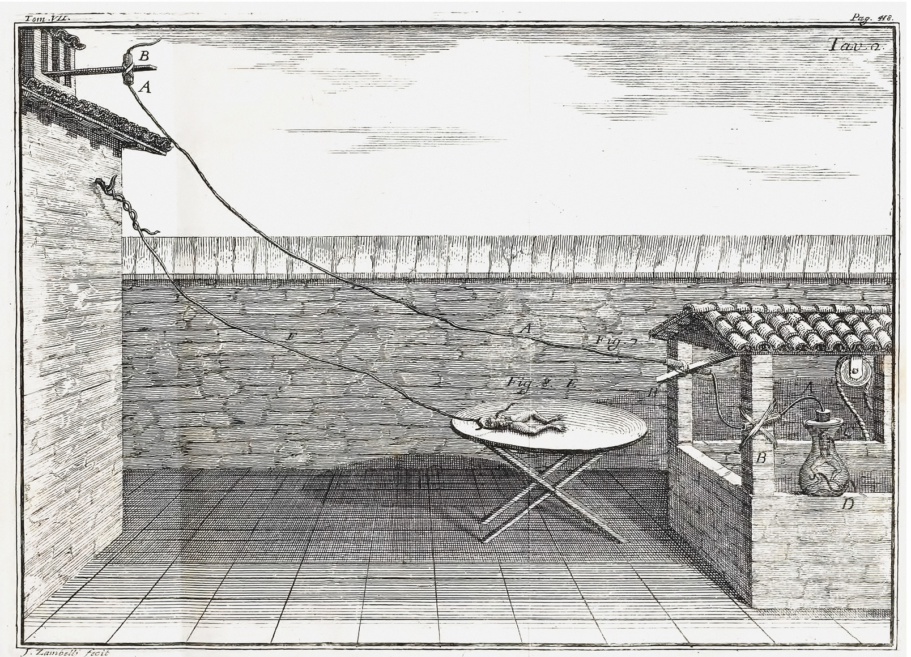
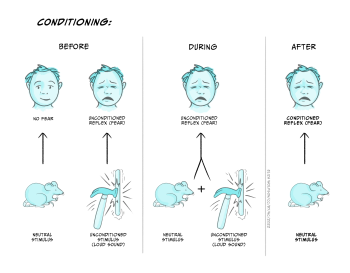
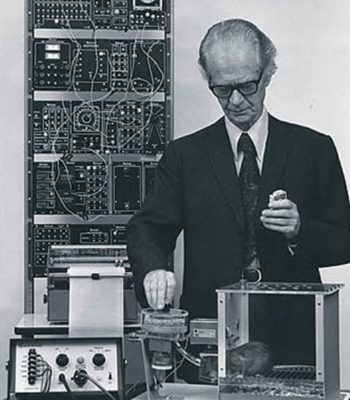
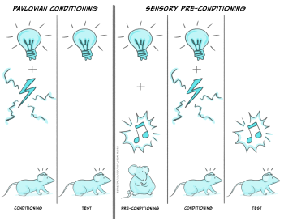

Introducción a la psicología biológica
La investigación en la interfaz entre la biología y la psicología se encuentra entre las áreas más activas de toda la ciencia. Busca responder algunas de las «grandes» preguntas que fascinan a nuestra especie desde hace miles de años. ¿Cuál es la relación entre cerebro y mente? ¿Qué significa ser consciente? Los avances en nuestra comprensión de afecciones como la depresión o la ansiedad, que pueden afectar gravemente nuestra calidad de vida, ofrecen esperanzas para el desarrollo de tratamientos más eficaces.
Una de las razones de los rápidos avances en psicología biológica fue el progreso tecnológico, que proporcionó herramientas para estudiar los procesos cerebrales de maneras inimaginables hace apenas unas décadas. Es fácil olvidar que hace tan solo 130 años, a fines del siglo XIX, Santiago Ramón y Cajal, Camillo Golgi y otras personas describían las estructuras detalladas de las células nerviosas del cerebro.
, Santiago. Vol 2, Fig 41, p 250. En su autobiografía, Cajal describe poéticamente las neuronas piramidales del hipocampo: «[Las] células piramidales, como las plantas de un jardín —por así decirlo, una serie de jacintos—, se alinean en setos que describen curvas elegantes». 2. Fig. 41, p 250.")
Además de su destreza para describir la estructura detallada del sistema nervioso, Cajal realizó avances teóricos fundamentales y, por ese motivo, suele ser considerado «el padre de la neurociencia». Fue el primero en sostener con claridad que el impulso nervioso se transmite en una sola dirección y que las neuronas individuales se comunican en estructuras especializadas llamadas sinapsis. Los mecanismos detallados que sustentan la comunicación —el sistema nervioso, el potencial de acción y la transmisión sináptica— no se esclarecieron hasta la década de 1950. Aproximadamente en la misma época, los registros de la descarga de células individuales del sistema nervioso, en especial en las regiones cerebrales que reciben estímulos sensoriales, comenzaron a dar indicios sobre la forma en que se codificaba y procesaba la información.

En aquel momento, los métodos experimentales para investigar la contribución de estructuras cerebrales específicas a distintos aspectos de la conducta eran rudimentarios. En esencia, consistían en destruir de manera permanente («lesionar») unos pocos milímetros cuadrados de tejido cerebral que contenían varios cientos de miles de células nerviosas y, luego, examinar los efectos sobre la conducta. Desde entonces, hubo avances notables en nuestra capacidad para estudiar los mecanismos cerebrales y su relación con la conducta. En la actualidad, es posible registrar simultáneamente la actividad de muchas células. Existen técnicas que permiten modular durante un período breve la actividad de grupos de células nerviosas con funciones identificadas y luego dejar que retomen su funcionamiento normal. Como vas a leer en capítulos posteriores de este libro, esto permitió comprender mucho mejor el funcionamiento del cerebro en circunstancias normales y las maneras en que puede alterarse en distintos estados patológicos.
A medida que leas este libro, podría parecerte que el cerebro es un órgano sumamente «ordenado». Al menos, esa es la impresión que podrías llevarte con facilidad al observar los dibujos y las imágenes que ilustran el texto. Sin embargo, vale la pena reflexionar sobre lo que se siente al encontrarse, en la práctica, con un cerebro vivo, blando y de consistencia gelatinosa. A continuación se presentan un par de oraciones del neurocirujano Henry Marsh, quien describe cómo utiliza un pequeño dispositivo de succión para acercarse gradualmente a un tumor ubicado hacia el centro del cerebro de un paciente y luego extirparlo. Este tumor en particular se encontraba en la glándula pineal, una estructura con una historia extensa y fascinante en la neurociencia. Marsh escribe:
Miro por el microscopio quirúrgico y avanzo con cautela a través de la sustancia blanca y blanda del cerebro, en busca del tumor. La idea de que mi aspirador se desplaza por el pensamiento mismo, por la emoción y la razón, de que los recuerdos, los sueños y las reflexiones consistan en gelatina, es sencillamente demasiado extraña para comprenderla. (Do No Harm: Stories of Life, Death and Brain Surgery. Weidenfeld & Nicolson, 2014; traducción propia).
Mente y cerebro: contexto histórico
¿El corazón o el cerebro como fundamento del pensamiento y la emoción?
Durante gran parte de la historia humana registrada, hubo dudas acerca de si el corazón o el cerebro era responsable de organizar nuestra conducta. Los primeros debates sobre este tema quedaron registrados sobre todo en las obras de los filósofos griegos porque, al menos en cierta medida, se dispone de textos completos, algo que no ocurre con la mayoría de las demás civilizaciones humanas antiguas. En los 700 años transcurridos aproximadamente entre el siglo 5o a. e. c. y el siglo 2o e. c., los griegos propusieron dos perspectivas contrapuestas.
Un grupo de filósofos, cuyo representante más conocido es Aristotle (~350 a. e. c.), sostenía que el pecho, muy probablemente el corazón, era fundamental para organizar la conducta y el pensamiento.

El corazón era la sede de la mente y el cerebro no cumplía ninguna función importante, salvo quizás enfriar la sangre. En situaciones amenazantes o estimulantes, tomamos conciencia de los cambios en la función cardíaca, pero no tenemos acceso consciente a los cambios en la activación cerebral que ocurren al mismo tiempo. Por lo tanto, no sorprende que se atribuyeran al corazón funciones «emocionales» y «cognitivas», ni que todavía ocupe un lugar en nuestra comunicación y nuestro lenguaje que el cerebro no tiene. Las disculpas pueden ser «sentidas»; el emoji universal del afecto y el amor es un corazón; Shakespeare hace que Macbeth concluya que «El rostro falso debe ocultar lo que sabe el falso corazón» (Macbeth 1.7.82; traducción propia), mientras se dispone a asesinar al rey Duncan y apoderarse del trono de Escocia.
De hecho, estas ideas contenían algo de verdad. Los experimentos realizados por Sarah Garfinkel y otras personas durante los últimos años demostraron que los receptores de presión de las arterias que parten del corazón se activan con cada contracción cardíaca y pueden influir en el procesamiento de estímulos relacionados con amenazas (Garfinkel and Critchley, 2016). El corazón no es el único órgano capaz de afectar la forma en que las personas procesan estímulos con relevancia emocional: los ritmos gástricos atípicos aumentan la evitación de estímulos visuales que provocan asco, como las heces, la carne en descomposición o la leche agria (Nord et al., 2021). Resulta interesante que William James, cuyo Principles of Psychology (1890) se considera uno de los textos fundacionales de la psicología moderna, propusiera una idea similar en un artículo breve publicado en la década de 1880 (James 1884).
Otro grupo de autores griegos antiguos otorgó al cerebro una función mucho más importante; sus representantes más conocidos son Hippocrates y Plato (siglo 4o a. e. c.), y Galen (siglo 2o a. e. c.). Desarrollaron la idea de que, dado que el cerebro estaba conectado físicamente mediante nervios con los órganos de los sentidos y los músculos, también era el lugar más probable de la conexión física con la mente. Galen fue un médico que se formó en Alejandría. Se trasladó a Roma y trataba con frecuencia las lesiones de los gladiadores. Aceptó el argumento de Hippocrates acerca de la importancia del cerebro para procesar la información sensorial y generar respuestas conductuales. La pérdida inmediata de conciencia que podía producir una lesión en la cabeza confirmó su perspectiva. También realizó experimentos que demostraron la función de nervios individuales: comprobó que cortar el nervio laríngeo, que va desde el cerebro hasta los músculos de la laringe, impedía que un animal vocalizara. Rechazó otra creencia anterior según la cual los pulmones podían ser la sede del pensamiento y sugirió que simplemente actuaban como un fuelle que impulsaba el aire a través de la laringe para producir sonidos.
Durante los siglos siguientes, los aportes de Galen se olvidaron en gran parte de Europa occidental, pero conservaron una enorme influencia en el mundo islámico. Ibn Sina (a quien todavía se conoce en ocasiones como Avicenna, la versión latinizada de su nombre) nació en 980 e. c. y suele ser reconocido como el más importante de los médicos de la Edad de Oro persa. Refinó y corrigió muchas ideas de Galen. Describió en detalle los efectos de un accidente cerebrovascular sobre la conducta y dedujo correctamente que estos accidentes podían deberse a obstrucciones o rupturas en la circulación sanguínea hacia el cerebro. Estudió a pacientes que padecían un trastorno similar a la depresión grave, denominado en aquel momento «trastorno del amor». Cuando trataba a una persona con este «trastorno», utilizaba los cambios en la frecuencia del pulso cardíaco para identificar los nombres de quienes tenían una importancia especial para ella. Además, como cabría esperar de un médico, conocía en detalle los efectos de fármacos de origen vegetal como el opio, el látex seco de las cápsulas de amapola cuyo componente activo es la morfina (Heydari et al., 2013). Sabía que era especialmente valioso para tratar el dolor, pero que tenía efectos adversos graves, entre ellos la supresión de la respiración y, con el uso prolongado, la adicción (véanse los capítulos 6 y 15).

Mente y cuerpo
En la efervescencia intelectual de la Europa posterior a la Reforma, la relación entre mente y cuerpo, en especial en el contexto de aquello que podemos saber con certeza que es verdadero, se convirtió en objeto de una gran controversia.

René Descartes fue un filósofo francés cuya obra más influyente en esta área, Discourse on Method, se publicó en 1637. Llegó a la conclusión de que nunca podemos tener la certeza de que nuestro razonamiento sobre el mundo exterior sea correcto, ni podemos estar seguros de que la mayoría de nuestras experiencias no sean simples sueños. Sin embargo, sostenía que de algo sí podemos tener certeza; en la traducción libre de Bryan Magee: Soy consciente, por lo tanto sé que debo existir: «Si je pense, donc je suis» en el francés original, o el célebre «Cogito, ergo sum» en la posterior traducción al latín (Magee, 1987).
Esto se convirtió en la base del argumento de Descartes a favor del dualismo. Sin embargo, también reconocía que la mente y el cuerpo debían interactuar de algún modo. En su libro De homine [About humans], escrito en 1633 pero publicado poco después de su muerte, sugirió que esta interacción podía ocurrir a través de la glándula pineal, por ser la única estructura no apareada del encéfalo. También pensaba que la acción muscular podía producirse mediante algún tipo de mecanismo neumático que implicaba el desplazamiento de «espíritus animales» desde los ventrículos encefálicos llenos de líquido hasta los músculos. En este esquema, la glándula pineal actuaba como una especie de válvula entre la mente y el cerebro. Hoy sabemos que la glándula pineal es, en realidad, una glándula endocrina importante para regular los patrones de sueño.
Descartes también describió reflejos simples, como retirar una extremidad ante el calor o el fuego, que ocurrían a través de la médula espinal y no involucraban la glándula pineal (Descartes [1662], 1998). Aunque muchas de sus ideas sobre el funcionamiento del cuerpo eran incorrectas, Descartes era materialista en el sentido de que concebía el cuerpo como un mecanismo.

La leyenda de Descartes para este dibujo (Figura 1.6) dice:
Por ejemplo, si el fuego A está cerca del pie B, las pequeñas partículas del fuego, que como sabés se mueven con gran rapidez, también pueden mover la parte de la piel del pie que tocan. De este modo, al tirar del pequeño hilo cc, que ves sujeto allí, abren al mismo tiempo e, que es la entrada al poro d, donde termina este pequeño hilo; del mismo modo que, al tirar de un extremo de una cuerda, hacés sonar una campana que cuelga del otro extremo… Ahora bien, cuando la entrada del poro, o del pequeño tubo, de, se abre de esta manera, los espíritus animales fluyen hacia él desde la cavidad F y, a través de este, se desplazan en parte hacia los músculos que sirven para retirar el pie del fuego, en parte hacia los que sirven para girar los ojos y la cabeza a fin de mirarlo, y en parte hacia los que sirven para extender las manos y girar todo el cuerpo para defenderse. (de Homine, 1662; traducción propia)
El rasgo común de las primeras ideas centradas tanto en el corazón como en el cerebro acerca de la relación entre cuerpo y conducta era un mecanismo basado en fluidos que transformaba las intenciones en conducta. En la perspectiva centrada en el cerebro, cumplía esta función el líquido de los ventrículos (los «espíritus animales» de Descartes), conectado con los músculos mediante los nervios; en la explicación centrada en el corazón, ese papel correspondía a la sangre.

Los fenómenos eléctricos ya se documentaban en Egipto en 2600 a. e. c., pero recién en el siglo XVIII se convirtieron en objeto de una investigación científica rigurosa. En 1733, Stephen Hales sugirió que el mecanismo concebido por Descartes podía ser de naturaleza eléctrica, en lugar de basarse en fluidos, aunque esta idea siguió siendo muy controvertida.
Para 1791, Luigi Galvani había confirmado que la estimulación eléctrica del nervio ciático de una rana podía producir contracciones en los músculos de la pata disecada a la que estaba conectado. Anunció que había demostrado «la naturaleza eléctrica de los espíritus animales».
En la década de 1850, Hermann von Helmholtz utilizó la misma preparación de nervio y músculo de rana para estimar que la velocidad de conducción en el nervio ciático era de unos 30 metros por segundo. Esto refutó propuestas anteriores según las cuales el impulso nervioso podía desplazarse a una velocidad igual o incluso superior a la de la luz. A lo largo del siglo XX, se avanzó de manera gradual en la comprensión precisa de cómo se transmite la información tanto dentro de las células nerviosas individuales como entre ellas. Podés leer más sobre este tema en los capítulos 4 y 5.
Aproximadamente en la misma época en que Galvani y Helmholtz descubrían los mecanismos de la conducción eléctrica en los nervios, también había un gran interés por determinar en qué medida las distintas funciones cognitivas podían localizarse en el cerebro. Franz Gall y Johann Spurzheim, que trabajaron durante la primera mitad del siglo XIX, propusieron que pequeñas áreas cerebrales, ubicadas principalmente en la corteza, eran responsables de distintas funciones cognitivas. También creían que podía determinarse en qué medida una persona se destacaba en áreas específicas mediante un examen minucioso de la forma del cráneo. Spurzheim acuñó el término frenología para describir esta técnica. La idea adquirió gran popularidad a comienzos de los años 1800, pero después cayó en descrédito.
Gall y Spurzheim tuvieron un desacuerdo espectacular después de comenzar a trabajar y publicar de manera independiente. Tras la aparición de un libro de Spurzheim, Gall escribió: «La obra del Sr. Spurzheim tiene 361 páginas, de las cuales copió 246 de mí… Otras personas ya lo acusaron de plagio; como mínimo, es muy ingenioso haber hecho un libro recortando con tijeras» (Whitaker & Jarema, 2017; traducción propia).
En la década de 1860, estudios de médicos como Paul Broca, que trabajaba en París, comenzaron a correlacionar la pérdida de funciones específicas, como el lenguaje, con lesiones en áreas concretas del cerebro. Solo podían determinarlo mediante disecciones realizadas después de la muerte, mientras que hoy técnicas como la tomografía computarizada (TC) y la resonancia magnética (RM) revelan cambios estructurales en el cerebro vivo. Los estudios de este tipo podían indicar que un área particular era necesaria para esa capacidad, pero no que fuera la única área relevante. La activación de distintas áreas cerebrales mientras las personas realizan tareas cognitivas tanto simples como complejas, incluido el habla, puede medirse mediante resonancia magnética funcional (RMf), mientras la persona participante permanece recostada en el equipo.
Broca también observó que la pérdida del lenguaje hablado casi siempre se asociaba con una lesión en la corteza izquierda y, a menudo, con debilidad en las extremidades derechas: el primer ejemplo claro de lateralización cerebral. Aunque suele atribuírsele este descubrimiento, Marc Dax, otro neurólogo que trabajaba en la década de 1830, parece haber realizado la misma observación que Broca. Sin embargo, sus datos no se publicaron hasta después de su muerte, en 1865, apenas unos meses antes de la publicación más exhaustiva del propio Broca. Hasta hace relativamente poco se suponía que la lateralización cerebral era exclusiva de los seres humanos y estaba asociada con el lenguaje, pero hoy existe evidencia convincente de que está extendida entre los vertebrados y tiene un origen evolutivo antiguo (Vallortigara & Rogers, 2020).
Broca, al igual que muchos de los médicos y científicos mencionados antes, tenía intereses muy amplios. Publicó estudios comparativos de la estructura cerebral de distintos vertebrados y los utilizó para respaldar las ideas de Charles Darwin sobre la evolución. Fue criticado por perspectivas potencialmente racistas (Gould, 2006). Creía que las distintas razas humanas podían representar especies diferentes y que era posible distinguirlas mediante diferencias anatómicas en el tamaño del cerebro y en las proporciones de las medidas de las extremidades. Los estudios genéticos modernos demuestran que los seres humanos actuales constituyen una sola especie, aunque también existe evidencia de que, en los comienzos de nuestra historia evolutiva, nuestra especie se cruzó con otros seres humanos antiguos hoy extintos, incluidos los neandertales y los denisovanos (Bergström et al., 2020).
El positivismo y el estudio de la conducta
Durante la segunda mitad del siglo XIX, quienes se dedicaban a la psicología solían recurrir a la introspección como fuente principal de datos. Sin embargo, el filósofo francés Auguste Compte, líder del movimiento positivista, sostenía que las ciencias sociales debían adoptar el mismo enfoque que las ciencias físicas y basarse únicamente en la observación empírica. En el estudio de la conducta, esto implicaba registrar la conducta en el laboratorio o en el campo. Este enfoque fue adoptado por psicólogos norteamericanos que estudiaban el condicionamiento y el aprendizaje animal, entre ellos John Watson (célebre por el «pequeño Albert»; véase más adelante) y Burrhus Skinner. Nikolaas Tinbergen y Konradt Lorenz utilizaron un marco similar al desarrollar la etología como disciplina en Europa.
El conductismo en América del Norte
En un artículo publicado en Psychological Review en 1913, Watson planteó que «la psicología, tal como la concibe el conductista, es una rama puramente objetiva y experimental de las ciencias naturales, que necesita de la introspección tan poco como la química y la física» (Watson, 1913). La trayectoria científica de Watson fue variada y comenzó con estudios sobre las bases neurales del aprendizaje. Le interesaba especialmente la idea de que las neuronas debían estar mielinizadas para posibilitar el aprendizaje. Luego pasó un año realizando estudios de campo sobre charranes sombríos y tiñosas bobas, en los que empleó un enfoque experimental para investigar el reconocimiento de los sitios de nidificación y de los huevos. Posteriormente, realizó estudios experimentales sobre condicionamiento con ratas, que destacaban la función de las relaciones simples entre estímulo y respuesta en la conducta. Rechazaba cualquier consideración de procesos cognitivos más complejos porque, a su entender, suponían el riesgo de volver a una separación dualista entre mente y cuerpo.
Hacia el final de su breve carrera científica, realizó el tristemente célebre experimento del «pequeño Albert», en el que condicionó a un bebé de nueve meses, Albert B., a temerle a una rata blanca (Watson & Rayner, 1920). Al principio, el bebé no mostraba temor ante la rata, pero luego el equipo de investigación producía un sonido fuerte e inesperado (un martillo que golpeaba una barra de acero) cada vez que el bebé extendía la mano hacia ella. Después de varios emparejamientos, Albert lloraba cuando se le presentaba la rata, pero seguía jugando con los bloques de madera que se le proporcionaban en el mismo contexto. También se angustiaba cuando se le presentaba un conejo, aunque en menor medida que ante la rata. Es casi seguro que hoy este experimento no sería aprobado de acuerdo con los códigos de ética vigentes en psicología (véase «Cuestiones éticas en psicología biológica», más adelante en este capítulo).

Este tipo de procedimiento suele denominarse en la actualidad condicionamiento pavloviano, en referencia al fisiólogo ruso Ivan Pavlov, ganador del Premio Nobel. En sus experimentos se utilizaban perros y se medía la salivación en respuesta a la presentación de carne cruda. Se condicionaba a los perros emparejando el sonido de un metrónomo en marcha (no una campana, como suele afirmarse) con la disponibilidad de la carne. Posteriormente, el sonido del metrónomo por sí solo bastaba para provocar la salivación. Aunque el nombre de Pavlov es el que se asocia con el fenómeno, este ya era bien conocido en su época. El fisiólogo francés Magendie describió una observación similar en seres humanos ya en 1836.

En su libro The Behaviour of Organisms (1938), Skinner formuló un enfoque todavía más radical: sostenía que los niveles de explicación cognitivo y fisiológico son innecesarios para comprender la conducta. En el prefacio añadido a la edición de 1966, escribió lo siguiente:
Las contingencias más simples comprenden al menos tres términos —estímulo, respuesta y reforzador— e implican al menos otra variable (la privación asociada con el reforzador). Esto es mucho más que entrada y salida y, cuando se tienen en cuenta de este modo todas las variables relevantes, no es necesario apelar a un aparato interno, ya sea mental, fisiológico o conceptual. Las contingencias bastan para explicar la atención, el recuerdo, el aprendizaje, el olvido, la generalización, la abstracción y muchos otros procesos denominados cognitivos.
")
Sin embargo, este enfoque ya había recibido críticas. En The Organisation of Behavior, publicado en 1949, Donald Hebb defendió una relación estrecha entre el estudio de la psicología y el de la fisiología. En los párrafos iniciales de su libro, contrastó su propio enfoque con el de Skinner y afirmó:
Tanto en la psicología como en la psiquiatría ha surgido un movimiento vigoroso que busca eliminar la «fisiologización», es decir, dejar de utilizar hipótesis fisiológicas. Skinner (1938) ha expuesto este punto de vista con claridad y eficacia, …… El presente libro está escrito desde un profundo desacuerdo con semejante programa para la psicología. (Hebb, 1949, página xiv de la Introducción).
Hoy se recuerda a Hebb principalmente por proponer que el aprendizaje implica que la información sobre dos acontecimientos separados converja en una misma célula nerviosa y que las conexiones se fortalezcan de manera tal que posibiliten el condicionamiento pavloviano u operante. Su hipótesis, cuyo origen situó en los escritos de Tanzi y otras personas de unos cincuenta años antes, suele recordarse mediante la regla mnemotécnica de Carla Schatz: «Las células que descargan juntas se conectan entre sí». En la actualidad, esta frase se asocia sobre todo con el fenómeno de la potenciación a largo plazo (PLP), que constituye un modelo importante de los mecanismos neurales implicados en el aprendizaje y la memoria.
Hubo otras áreas de la psicología, en especial el estudio de la sensación y la percepción, en las que el enfoque radical de los conductistas nunca llegó a imponerse por completo. Helmholtz, cuyos primeros trabajos sobre la conducción neural fueron tan importantes, también realizó aportes innovadores al estudio de la percepción auditiva y, sobre todo, visual. Destacó la importancia de las inferencias inconscientes en la interpretación de la información visual. Todo procesamiento perceptivo comprende una combinación de factores «ascendentes», derivados de la entrada sensorial, y factores «descendentes», que comprenden nuestros recuerdos y experiencias previas con entradas sensoriales similares. Otros términos más descriptivos para «ascendente» y «descendente» son «guiado por los datos» y «guiado por los conceptos», respectivamente. Vas a aprender mucho más sobre estos procesos en los módulos dedicados a la psicología cognitiva.
El desarrollo de la etología en Europa
Aunque a mediados del siglo XX el estudio del aprendizaje animal constituía un paradigma dominante en la psicología biológica de América del Norte, en Europa su predominio era mucho menor. Allí se desarrolló un enfoque alternativo.

Konrad Lorenz y Nikolaas Tinbergen destacaron el estudio detallado de la conducta animal, a menudo en el campo en lugar del laboratorio. Ambos sentían fascinación por la historia natural desde jóvenes. Lorenz se interesó especialmente por el fenómeno de la impronta. Este fenómeno se describió por primera vez en aves, como gallinas y gansos, que abandonan el nido poco después de la eclosión y siguen a sus progenitores. En un experimento clásico, dividió en dos una nidada de ánsares comunes recién nacidos. Un grupo fue expuesto a la madre y el otro, a él. Después de varios días, reunió a todas las crías. Cuando él y la madre se alejaron en direcciones distintas, las crías se dividieron en dos grupos en función de con quién se hubiera establecido originalmente la impronta. En la actualidad, el término impronta suele emplearse de manera mucho más general para referirse al aprendizaje que ocurre en etapas tempranas de la vida, pero continúa influyendo en la conducta durante la adultez. Lorenz continúa siendo una figura controvertida por su vinculación con el nazismo durante la Segunda Guerra Mundial.
Tinbergen comenzó su carrera científica en los Países Bajos, donde realizó experimentos que revelaron cómo los insectos utilizan puntos de referencia para localizar una madriguera. Estos estudios recordaban a los trabajos anteriores de Watson con charranes, aunque estaban mucho mejor diseñados. Durante la Segunda Guerra Mundial fue retenido como rehén, pero sobrevivió y, posteriormente, se trasladó a Oxford University a fines de la década de 1940. Se lo recuerda principalmente por un artículo de 1963 sobre los objetivos de la etología, que servirá de base para la próxima sección de este capítulo.
Al igual que Watson y Skinner, Lorenz y Tinbergen estaban interesados en explicar la conducta en sus propios términos, en lugar de explorar los mecanismos cerebrales o fisiológicos subyacentes. En este sentido, ambos adherían al enfoque positivista promovido por Auguste Compte para todas las ciencias sociales. Tinbergen dejó muy clara esta idea en su libro The Study of Instinct (1951). Allí reconoce que la conducta de muchos otros animales puede parecerse a la de un ser humano que experimenta una emoción intensa (como había señalado Darwin en The Expression of Emotions in Man and Animals en 1872), pero luego afirma que «dado que los fenómenos subjetivos no pueden observarse objetivamente en los animales, es inútil afirmar o negar su existencia» (Tinbergen, 1951, p.4).
Una perspectiva cognitiva del aprendizaje animal y la etología

Durante la segunda mitad del siglo XX, quienes estudiaban la conducta humana desde la psicología estaban cada vez más disconformes con las limitaciones del enfoque conductista. Quienes investigaban el aprendizaje animal también advirtieron que algunos de los fenómenos observados en sus experimentos solo podían explicarse si se postulaban mecanismos cognitivos intervinientes. Tony Dickinson, en su breve texto Contemporary Animal Learning Theory, publicado en 1980, utilizó el ejemplo del precondicionamiento sensorial. Dickinson fue uno de los iniciadores de la denominada «revolución cognitiva» en el aprendizaje animal.
En un procedimiento pavloviano estándar, primero se entrena a las ratas para que presionen una palanca a cambio de pequeñas pastillas de alimento endulzado. Luego se las expone a un estímulo inicialmente neutro —una luz en la pared de la jaula— inmediatamente antes de que reciban una descarga eléctrica leve en las patas. Después de varios emparejamientos de este tipo, se expone a las ratas únicamente a la luz, sin descarga. Sin embargo, las ratas se «paralizan» (permanecen inmóviles) y dejan de presionar la palanca para obtener la recompensa alimentaria durante unos segundos antes de retomar su conducta habitual.
La modificación fundamental del precondicionamiento sensorial consiste en exponer a las ratas, antes de la tarea principal de condicionamiento, a emparejamientos de una luz con un segundo estímulo neutro, en este caso un sonido. Como después de estos emparejamientos iniciales no ocurre nada, las ratas pronto comienzan a ignorarlos. Su conducta en curso, en este caso presionar la palanca para obtener las pastillas de alimento, no cambia. A continuación, se condiciona a las ratas para que asocien la luz con la descarga del modo habitual. Después del condicionamiento, se las expone a la luz o al tono. Las ratas expuestas al tono interrumpen su actividad de manera similar a las expuestas a la luz, pese a no haber experimentado nunca ese sonido antes de una descarga. Por lo tanto, aunque su conducta haya cambiado poco o nada durante aquellos emparejamientos iniciales de luz y tono, es evidente que aprendieron algo. El aprendizaje no tiene por qué implicar un cambio conductual manifiesto.

Dickinson expuso las implicancias de la siguiente manera:
Como veremos, el precondicionamiento sensorial es tan solo uno de muchos ejemplos de aprendizaje sin manifestación conductual, y todos ellos plantean dificultades para cualquier perspectiva que equipare el aprendizaje con un cambio en la conducta. Algo debe cambiar durante el aprendizaje, y sostendré que la mejor manera de caracterizar ese cambio es como una modificación de alguna estructura interna. Sigue siendo una pregunta abierta si en algún momento podremos identificar el sustrato neurofisiológico de estas estructuras cognitivas. Sin embargo, está claro que no podemos hacerlo en el presente. (Dickinson, 1980, p.5) [traducción propia]
¡Eso fue en 1980!
Al momento de escribir estas líneas, en la década de 2020, es posible dar una respuesta optimista a la pregunta final de Dickinson. Las técnicas modernas de la neurociencia permiten identificar las estructuras cerebrales y los cambios en pequeños grupos de neuronas que sustentan el aprendizaje y la memoria. En un ejemplo reciente, Eisuke Koya y sus colegas de la School of Psychology de la University of Sussex describen una tarea de aprendizaje sencilla en la que se expone a ratones a una breve serie de chasquidos (el estímulo «que se condicionará») y, a continuación, se les permite beber una pequeña cantidad de una solución de sacarosa. Tras exponerlos a estos emparejamientos durante algunos días, aprenden a acercarse al dispensador de sacarosa apenas comienzan los chasquidos. Los ratones utilizados en estos experimentos fueron modificados genéticamente de modo que las células nerviosas de la corteza frontal activadas durante los ensayos de condicionamiento pudieran emitir una fluorescencia verde. La investigación estableció que pequeños grupos estables de células nerviosas («conjuntos neuronales») se activaban de un día al siguiente. El equipo de investigación también pudo manipular estas células para producir un cambio atípico en su actividad durante pruebas posteriores en las que se exponía a los animales al estímulo condicionado. Al hacerlo, se alteró el acercamiento al dispensador de sacarosa, lo que sugiere que la activación de estas células contribuía de manera importante a la conducta aprendida del ratón (Brebner et al., 2020). Los experimentos de este tipo se acercan al objetivo de identificar las estructuras y los mecanismos neurales que sustentan el aprendizaje y la memoria, y muestran cómo quienes trabajan en psicología y neurociencia pueden colaborar para abordar los problemas fundamentales de la psicología biológica.
Estudios de campo sobre primates no humanos
Quienes investigaban el aprendizaje animal no eran las únicas personas que encontraban difícil explicar sus resultados experimentales sin apelar a procesos cognitivos que no podían observarse directamente. Quienes se dedicaban a la etología enfrentaban un desafío similar.
Jane Goodall comenzó su trabajo de campo con chimpancés a principios de la década de 1960. A medida que conocía al grupo que estudiaba en Gombe Stream, Tanzania, y este la aceptaba, reunió evidencia sobre la riqueza de su vida social y emocional y sobre su uso de herramientas, lo que revolucionó los estudios de la conducta de los primates. Para consternación de sus colegas de Cambridge, también les puso nombres a los chimpancés en lugar de identificarlos con números, que supuestamente permitirían un estudio más objetivo.

Aproximadamente en la misma época, Alison Jolly comenzaba sus estudios sobre la conducta de los lémures en Madagascar. Sostuvo que la principal fuerza impulsora de la evolución de la cognición de los primates provenía de las complejas exigencias de vivir en grupos sociales complejos y duraderos (Jolly, 1966).
Los estudios de campo realizados desde entonces han demostrado la existencia de relaciones sociales duraderas en especies de primates como los babuinos y los monos verdes. Las vocalizaciones que emiten los animales durante encuentros agresivos se interpretan en función de su conocimiento previo de las jerarquías sociales del grupo y de su conducta anterior. Por ejemplo, las hembras de babuino chacma estudiadas por Dorothy Cheney y Robert Seyfarth emiten una vocalización, el «gruñido reconciliador», justo después de un encuentro agresivo para indicar un desenlace pacífico entre ambos individuos. Cuando se reproducía esa vocalización ante una hembra que acababa de participar en una sesión de acicalamiento mutuo con otra hembra, su conducta daba a entender que el llamado debía estar dirigido a otro individuo y no a ella. Sin embargo, si poco antes había participado en un encuentro agresivo con esa misma hembra, su conducta daba a entender que el gruñido estaba dirigido a ella (Engh et al., 2006).
Los estudios de campo sobre otros mamíferos longevos, incluidos los elefantes y los delfines, sugieren que también poseen redes sociales complejas y capacidades cognitivas sofisticadas.
Al concluir este brevísimo recorrido histórico por las ideas sobre la relación entre el cerebro y la conducta, se destacan dos aspectos. El primero es que, entre quienes se dedican actualmente a la psicología y la neurociencia, existe una aceptación casi universal de alguna forma de materialismo. En otras palabras, toda la complejidad de nuestra conducta, incluso en ámbitos relativamente menos comprendidos como la conciencia, es consecuencia de mecanismos físicos que operan en nuestro cuerpo y, principalmente, en el sistema nervioso. El segundo es que, pese a una interrupción que se prolongó al menos durante la primera mitad del siglo XX, fenómenos como la emoción y la conciencia ya no se consideran «vedados» para el estudio científico. Uno de los desafíos de la neurociencia moderna es comprender cómo el sistema nervioso construye y utiliza representaciones internas de aspectos del mundo exterior, y cómo les atribuye una carga emocional.
¿Qué tipos de preguntas plantea la psicología biológica?
Como la psicología biológica se ocupa tanto de la conducta como de los mecanismos fisiológicos y cerebrales pertinentes, suele partir de observaciones conductuales interesantes o de datos experimentales. Una vez que la conducta de interés se documentó adecuadamente, es momento de formular algunas preguntas. El etólogo Niko Tinbergen propuso cuatro grandes tipos de preguntas que podían resultar de interés (Tinbergen 1963). Las dos primeras se sitúan en la escala temporal del ciclo vital de un animal y se ocupan de:
(i) las causas subyacentes de los cambios en la conducta, como los mecanismos cerebrales o los cambios hormonales, y
(ii) el desarrollo de la conducta, por ejemplo, a medida que un individuo madura hasta alcanzar la adultez.
A veces se las denomina causas próximas de la conducta. Las otras dos preguntas se sitúan en un marco temporal mucho más amplio y pueden considerarse las causas últimas (Bateson & Laland, 2013). Se ocupan de:
(iii) las relaciones evolutivas entre los patrones de conducta de diferentes especies, y
(iv) las ventajas de determinados patrones de conducta en el contexto de la selección natural.
Dos ejemplos permitirán ilustrar cómo estas preguntas difieren entre sí y, aun así, abordan por qué una conducta determinada adopta la forma que presenta.
Ejemplo 1: canto de las aves
El pinzón vulgar (Fringilla coelebs) es un ave cantora común en Europa. A comienzos de la primavera, los machos adultos exhiben un llamativo plumaje nupcial y su pico se oscurece. Al mismo tiempo, comienzan a posarse en lugares visibles dentro de un pequeño territorio que defienden de otros machos y empiezan a cantar. Las hembras no cantan, aunque emiten diversas vocalizaciones. Entonces, ¿por qué cantan los pinzones machos?

Causas y mecanismos. Los cambios en el color del pico y el inicio del canto están asociados con el aumento de la duración del día en primavera. Estudios experimentales en otras especies de aves cantoras, como los realizados por Fenando Nottebohm en canarios, demostraron que en esta época aumenta la secreción de testosterona y que la administración experimental de esta hormona esteroidea produce los mismos cambios en el aspecto y la conducta (Nottebohm, 2002). Otros estudios demostraron que, en ese momento, también se producen cambios en el cerebro del ave.
El resultado más sorprendente fue la demostración clara de que, mediante división celular, se forman neuronas nuevas en las áreas cerebrales involucradas en el canto. A mediados de la década de 1980, cuando se realizaron estos estudios, el consenso era que nunca se incorporaban neuronas al cerebro maduro de un vertebrado. El trabajo de Nottebohm obligó a reconsiderar esta idea. Los métodos utilizados en su laboratorio se replicaron en otras especies y demostraron que lo mismo también podía ocurrir en mamíferos, incluidos los seres humanos. Desde aquellos estudios pioneros, se ha aprendido mucho más acerca de los circuitos del cerebro de las aves cantoras que sustentan la producción del canto.
Desarrollo. No necesitás tener experiencia en observación de aves para reconocer el canto de un pinzón. Consiste en varios trinos breves seguidos de un remate característico. Este sonograma de un pinzón muestra la intensidad (panel superior) y los cambios de frecuencia de su canto. También podés reproducir el canto como un video breve.
Sin embargo, aunque es difícil confundir el canto de un pinzón con el de otra especie, este posee una complejidad inesperada. Un individuo puede cantar varios tipos de canto con diferencias sutiles; además, el canto presenta diferencias claras entre las distintas regiones de su amplia distribución europea. Esto plantea varias preguntas sobre cómo desarrolla su repertorio un pinzón joven. Si se cría un pichón en un ambiente acústicamente aislado, desarrolla un canto muy atípico, que carece de la estructura detallada propia de un pinzón. En cambio, si un ave criada del mismo modo escucha cantos grabados, copia con precisión los distintos tipos de canto y los incorpora a su repertorio. Por supuesto, transcurre un lapso considerable entre la audición del canto durante el verano, cuando el ave acaba de emplumar, y su reproducción en la primavera siguiente; por lo tanto, este es otro ejemplo de aprendizaje sin manifestación conductual. En la naturaleza, la situación resulta mucho más compleja. Un pinzón puede adquirir algunos tipos de canto durante el primer verano, pero también puede aprender otros de sus vecinos en la primavera siguiente, cuando establecen sus territorios. Está claro que una idea temprana y difundida sobre el desarrollo de los tipos de canto es incorrecta: no se aprenden exclusivamente del padre del ave (Riebel et al., 2015).
Relaciones evolutivas. Las aves, al igual que los mamíferos, los reptiles y los anfibios, son vertebrados. Aunque presentan una enorme diversidad de aspectos y conductas, comparten características, como la presencia de una columna vertebral. También existen grandes similitudes en aspectos generales de la estructura y el funcionamiento del cerebro. Las aves cantoras constituyen uno de los diversos grupos de aves actuales y comprenden unas 5000 especies. Todas poseen una siringe bien desarrollada —el equivalente aproximado de la laringe humana—, cuya compleja musculatura les permite cantar. Existe una enorme variación entre especies: desde el canto complejo y prolongado de túrdidos como el mirlo y el ruiseñor hasta el canto mucho más sencillo del pinzón. Las aves cantoras evolucionaron hace unos 45 millones de años, y las aves se separaron del linaje de vertebrados que también dio origen a los mamíferos hace unos 320 millones de años. Nuestro ancestro común probablemente se asemejaba a un pequeño lagarto. Los lagartos actuales pueden mostrar cierto grado de flexibilidad conductual y aprendizaje social, lo que plantea preguntas interesantes acerca de en qué medida algunas de las capacidades cognitivas más avanzadas de las aves y los mamíferos evolucionaron de manera independiente o se apoyan en componentes ya presentes en aquel ancestro común.
Función o utilidad actual. El canto supone un gran gasto energético en una época del año en la que el alimento no es particularmente abundante. También puede ser peligroso. ¡Existe el riesgo de que un gavilán aparezca por encima del seto en el que canta el pinzón y encuentre allí su próxima comida! Por consiguiente, el canto también debe tener el potencial de aumentar de algún modo la aptitud biológica del ave. Aquí intervienen al menos dos factores. Un macho debe atraer a una hembra para que anide en su territorio y se aparee con él. Su canto también anuncia a otros machos que ocupa ese espacio, o que intenta ocuparlo, y puede preceder a una pelea por el control de las mejores zonas. También existe evidencia experimental de que las características del canto, en particular la complejidad del trino final, pueden resultar atractivas para las hembras y llevarlas a preferir un macho antes que otro. Si bien la evidencia no es del todo convincente en el caso de los pinzones, esta idea sería compatible con hallazgos en diversas especies. El croar de una rana, el bramido de un ciervo macho o los colores de la cola de un pavo real pueden actuar como señales de la calidad del individuo que las emite y tener la ventaja de ser difíciles de falsear: son las denominadas «señales honestas». Sin embargo, aún no está claro de qué manera precisa evolucionan estas señales (Penn & Számadó, 2020; Smith, 1991).
Ejemplo 2: ansiedad y miedo
El enfoque general de Tinbergen puede resultar productivo para pensar cualquier aspecto de la conducta. En los seres humanos, la ansiedad o el miedo son experiencias emocionales desagradables que pueden adoptar muchas formas, entre ellas el pánico y diversos tipos de fobias. La emoción de miedo suele ser provocada por estímulos bastante específicos relacionados con amenazas, como una serpiente (fobia a las serpientes) o los espacios abiertos y amplios (agorafobia). Al igual que con el canto de las aves, podemos preguntarnos «¿por qué?» y descomponer la pregunta en interrogantes sobre causas próximas o últimas.
Causas y mecanismos. Los mecanismos fisiológicos y cerebrales subyacentes están bien estudiados. Incluyen el aumento de la frecuencia cardíaca, la liberación de hormonas como la adrenalina y la activación de una red cerebral específica que comprende la amígdala. Una parte de la amígdala, el núcleo central, es responsable de activar de manera coordinada estos diversos cambios fisiológicos (LeDoux, 2012). Comprender estos tipos de mecanismos posee relevancia clínica. Los fármacos que actúan selectivamente sobre estos circuitos de procesamiento de amenazas podrían ser útiles para tratar la ansiedad. De hecho, las benzodiacepinas como el valium todavía se utilizan ampliamente con este fin y se sabe que tienen efectos particularmente potentes en la amígdala. Una pregunta importante, aún sin respuesta, es cómo se relacionan estas respuestas fisiológicas con la experiencia consciente del miedo.
Desarrollo. También sabemos bastante acerca de cómo puede desarrollarse el miedo durante la vida de un individuo. El condicionamiento simple suele intervenir, y también existe evidencia sólida de que especies tan diversas como los roedores y los primates tienen mayor propensión a adquirir miedo y evitar ciertos tipos de objetos que otros. En las especies sociales, el aprendizaje por observación también puede ser importante. Los estudios con monos rhesus jóvenes ilustran estos puntos. Al principio, una cría de rhesus muestra poca evitación o miedo frente a modelos de serpientes o flores. Sin embargo, si se le permite mirar un video editado en el que un rhesus adulto parece responder con miedo ante las flores o ante una serpiente, la cría desarrolla respuestas de miedo ante la serpiente, pero no ante la flor (Cook & Mineka, 1990). Esto sugiere una tendencia innata a adquirir miedo ante ciertos tipos de objetos, como una serpiente, que puede potenciar los efectos del aprendizaje por observación. De manera similar, muchas especies de roedores evitan olores asociados con posibles depredadores, como un zorro o un gato, sin haber tenido ninguna experiencia previa con esos animales. Sin embargo, en particular cuando son jóvenes, esas respuestas pueden intensificarse si observan que un individuo adulto responde con fuerza al mismo estímulo.
Relaciones evolutivas. Los estudios comparativos de los patrones conductuales específicos asociados con el miedo y de los mecanismos fisiológicos y cerebrales subyacentes sugieren que estos se han conservado a lo largo de la evolución de los vertebrados. Charles Darwin, en The Expression of the Emotions in Man and Animals, proporcionó algunas de las primeras descripciones conductuales verdaderamente detalladas de las expresiones faciales asociadas con el miedo y destacó en particular su función en la comunicación. Las comparaciones detalladas de los circuitos neurales de mamíferos, aves, anfibios y reptiles sugieren que la amígdala, y en especial sus conexiones con el sistema nervioso autónomo —que activan las respuestas hormonales y otras respuestas fisiológicas ante los estímulos que provocan miedo—, se conserva a lo largo de todo el linaje evolutivo de los vertebrados y, por lo tanto, debe haberse originado hace al menos 400 millones de años. Así, no sorprende que una de las respuestas de una rana terrestre de Fiyi ante la presencia de un posible depredador (un sapo de caña) sea el aumento de la hormona del estrés corticosterona, junto con una respuesta conductual —en este caso, la inmovilidad— que reduce la probabilidad de ser devorada (Narayan et al, 2013). La exposición de seres humanos a una situación estresante produce la misma respuesta hormonal, aunque la hormona liberada es el cortisol, cuya estructura es casi idéntica a la de la corticosterona.
Función o utilidad actual. Las preguntas sobre la función, o la utilidad actual, pueden abordarse en múltiples niveles. Está claro que el miedo, o la percepción de estímulos relacionados con amenazas, puede ser un potente impulsor del aprendizaje. Como vimos anteriormente en este capítulo, los estímulos antes neutros que predicen una amenaza o un peligro llegan a provocar las mismas respuestas que la propia amenaza (condicionamiento pavloviano). En el ambiente natural, es probable que estas respuestas aumenten la aptitud biológica. Sin embargo, además de pensar de manera bastante global en la función probable de los sistemas del miedo, también es posible analizar los elementos conductuales individuales que componen una respuesta de miedo. Uno de esos elementos, descrito por Darwin (Darwin, Charles, 1872) y reconocido también en los estudios posteriores de Paul Ekman, es la elevación de las cejas, que vuelve mucho más visible la esclerótica (la parte blanca) del ojo (Jack et al., 2014 incluye un ejemplo en video). Es posible que la función original de esta respuesta haya sido simplemente ampliar el campo visual, pero, en especial en los primates, ahora también puede servir para comunicar miedo dentro de un grupo social. Es probable que las respuestas conductuales adquieran con frecuencia funciones adicionales durante la evolución, incluso hasta volver irrelevante la función original. Por este motivo, suele preferirse el término «utilidad actual» antes que «función» (Bateson & Laland, 2013). Si se evalúa experimentalmente una hipótesis funcional, siempre se medirá la utilidad actual. Cuando una característica o un rasgo particular adquiere funciones adicionales de este modo, a veces se los describe como exaptaciones en lugar de adaptaciones.
Estrategias científicas en psicología biológica
Es probable que la primera fase de cualquier investigación científica sea descriptiva. En psicología biológica, es en esta fase donde resulta más evidente la influencia del enfoque etológico. La manera más sencilla de describir cómo se desarrolla esta fase es mediante algunos ejemplos concretos. Una vez que la conducta de interés está claramente caracterizada, suele ser el momento de recopilar datos empíricos. Esto suele implicar la recopilación de datos conductuales y fisiológicos para correlacionarlos, o bien la adopción de un enfoque más experimental en el que se manipulan deliberadamente factores ambientales o fisiológicos. La combinación de estos enfoques permite comenzar a dilucidar cómo los procesos neurales influyen en la conducta y cómo, a su vez, reciben la influencia de las consecuencias de esa conducta.
Descripción de la conducta: expresiones faciales y variación individual durante el condicionamiento
Muchos mamíferos, entre ellos los roedores y los primates (incluidos los seres humanos en esta última categoría), producen expresiones faciales características cuando prueban posibles fuentes de alimento. Las personas se relamen al comer algo dulce y pegajoso. Un alimento o una bebida inesperadamente ácidos (como el jugo de limón puro) o amargos (quizás hojas maduras de col rizada o de algún otro integrante de la familia de las coles) pueden provocar una respuesta de apertura amplia de la boca en la que, en los casos más extremos, puede gotear saliva.
Este tipo de respuesta puede observarse en bebés muy pequeños. De hecho, como probablemente sepa cualquier persona a cargo de la crianza, es muy común durante la transición de la lactancia a los alimentos sólidos. Aunque resulte sorprendente, se observan respuestas muy similares en ratas y ratones cuando beben soluciones dulces, ácidas o amargas. Esto demuestra que probablemente estas respuestas se conservaron durante períodos evolutivos relativamente prolongados. Es posible que cumplan una doble función. Una respuesta como la apertura amplia de la boca ayuda a expulsar algo potencialmente tóxico: el amargor suele indicar que una planta contiene toxinas perjudiciales. Sin embargo, también es probable que, al menos en algunas especies que se alimentan en grupos sociales, la «utilidad actual» de estas expresiones incluya una función comunicativa. Este sería otro ejemplo de una exaptación (es decir, una función adicional que adquiere valor adaptativo con posterioridad).

La medición detallada de estas respuestas faciales constituye la base de la denominada «tarea de reactividad al sabor», en la que se infunden en la boca de una rata o un ratón cantidades controladas de soluciones con distintas propiedades gustativas y se cuantifican las expresiones faciales (Berridge, 2019). En un principio, la tarea se diseñó para investigar la función de distintas estructuras cerebrales en el procesamiento gustativo. Poco después, algunos estudios detallados con diversas soluciones revelaron que la intensidad con que evocaban respuestas ingestivas («agradables») y aversivas («desagradables») podía variar de manera independiente, al menos hasta cierto punto. Luego quedó claro que ciertas manipulaciones farmacológicas y cerebrales no afectaban las expresiones faciales evocadas por una solución dulce que resultaba agradable o gratificante. Sin embargo, esas mismas manipulaciones sí reducían el esfuerzo que un animal estaba dispuesto a realizar (por ejemplo, presionar una palanca, quizás varias veces) para acceder a esa solución. La implicación importante era que el grado en que algo «gusta», medido mediante las expresiones faciales, puede depender de factores distintos de los que determinan si se lo «desea», medido mediante el esfuerzo necesario para obtener esa recompensa. Aunque esta distinción surgió inicialmente al investigar un área que podría parecer poco conocida de la psicología biológica, se convirtió, como vas a leer en el capítulo 15, Adicción, en una idea teórica importante que ayuda a explicar algunas características desconcertantes de la adicción a sustancias, alimentos y otros estímulos gratificantes.
Una característica de la conducta animal, incluida la humana, que al principio puede resultar irritante es la considerable variación que suele haber entre individuos expuestos a la misma manipulación experimental. Puede ser tentador ignorarla o elegir medidas que, al menos, la reduzcan al mínimo. Pero esto puede ser un error, como demuestra el siguiente ejemplo de condicionamiento pavloviano.
A medida que un grupo de ratas aprende la asociación entre el encendido de una luz y la entrega de una pastilla de alimento, recupera la pastilla con mayor rapidez, y el promedio de la conducta grupal produce una curva de «aprendizaje» uniforme. Sin embargo, la observación cuidadosa de cada individuo revela varios aspectos. En primer lugar, los cambios en cada animal son mucho más discontinuos: es casi como si, en determinado momento, cada rata «entendiera» la tarea, ¡pero en distintos puntos del proceso de entrenamiento! La conducta individual también varía de otras maneras potencialmente interesantes. Algunas ratas se acercan a la luz cuando se enciende, se alzan sobre las patas traseras para investigarla y siguen haciéndolo incluso cuando después se dirigen al lugar donde se entrega la pastilla. Otras ratas se desplazan de inmediato hacia el lugar donde se entregará el alimento y, al parecer, ya no muestran interés por la luz. La conducta del primer grupo se denomina «seguimiento de la señal» y la del segundo, «seguimiento de la meta». Los animales que siguen la señal y los que siguen la meta también difieren de otras maneras interesantes. Por ejemplo, las ratas que siguen la señal muestran mayor impulsividad en otras tareas y adquieren con más facilidad la autoadministración de alcohol. Estas mismas distinciones también pueden aparecer en la conducta humana y predecir la vulnerabilidad a la adicción a sustancias y a la recaída.
Aunque es probable que la fase descriptiva dé inicio a toda investigación científica rigurosa, una vez realizadas observaciones interesantes suelen surgir preguntas como las analizadas en la sección anterior. ¿Cuáles son los mecanismos cerebrales y fisiológicos que subyacen a la conducta? ¿Cómo se desarrollan los patrones de conducta a lo largo de la vida? Y así sucesivamente. Para determinar cómo abordar estas preguntas, existen varias vías posibles. Por lo general, se emplea una combinación de dos estrategias generales.
Estrategias de investigación: enfoques correlacionales y manipulaciones experimentales
Una estrategia consiste en observar cambios en la conducta —por lo general, en una situación de prueba cuidadosamente controlada o mediante un conjunto claramente definido de patrones conductuales durante el trabajo de campo— mientras se miden cambios posiblemente relevantes en el funcionamiento fisiológico y cerebral. Luego, mediante técnicas estadísticas adecuadas, se pueden correlacionar los cambios conductuales y fisiológicos. La segunda estrategia consiste en manipular deliberadamente una situación de prueba para determinar en qué medida un cambio inducido en la fisiología o el funcionamiento cerebral produce un cambio en la conducta, o si un cambio conductual produce un cambio fisiológico.
El problema de la primera estrategia, la correlacional, es que, aunque los resultados pueden sugerir algún tipo de relación causal entre la conducta y la fisiología, no permiten esclarecer la naturaleza de esa relación. La conducta A puede causar cambios en la variable fisiológica o cerebral B. Pero, de igual manera, la fisiología puede influir en la conducta. Por último, puede que no exista un vínculo mecanístico directo entre la conducta y la fisiología, sino que una tercera variable afecte a ambas de manera independiente. Otra complicación es la posible existencia de circuitos de retroalimentación importantes que influyan en el resultado. Por lo tanto, aunque los estudios correlacionales pueden ser muy útiles, presentan limitaciones para su interpretación. La segunda estrategia, que implica una manipulación experimental deliberada, ofrece mayores posibilidades de determinar la dirección de la causalidad. Pero puede plantear otros problemas. La interferencia deliberada en el funcionamiento de un sistema biológico complejo puede hacer que este responda de maneras impredecibles y también puede ser éticamente problemática.

Veamos cómo funciona esto en la práctica a partir de la conducta de los ciervos rojos durante la temporada de berrea otoñal. En esta época, un ciervo macho exitoso puede establecer un «harén» de hembras y defenderlas de otros machos. Su conducta aumenta la probabilidad de que solo él tenga la oportunidad de aparearse con ellas y, por lo tanto, de que la descendencia resultante incremente la representación de sus genes en la generación siguiente. Las hembras también se benefician de formar parte del harén porque obtienen cierta protección frente al acoso de otros machos, lo que les permite alimentarse con menos interrupciones. Pueden elegir el harén de un macho en particular según la aptitud biológica que perciban en él.
En primer lugar, sería posible correlacionar el aumento gradual de la conducta agresiva durante la berrea del ciervo rojo con el incremento de la testosterona en sangre que se produce durante el otoño. Podría resultar tentador concluir que el aumento del nivel de testosterona causa el aumento de la conducta agresiva dirigida hacia otros machos. Sin embargo, primero habría que descartar al menos otras dos posibilidades, y tal vez más.
En primer lugar, es posible que algún tercer factor desencadene de manera independiente los cambios en la conducta y el aumento del nivel de testosterona. Una alternativa sería que la disminución de la duración del día actuara como ese desencadenante. La señal de la duración del día podría ser detectada por la glándula pineal (¡la supuesta válvula de Descartes entre el alma y el cuerpo!) y desencadenar de manera independiente tanto los cambios hormonales como los conductuales.
Una segunda posibilidad es que los cambios conductuales sean los que desencadenen el cambio hormonal. Esta propuesta no es del todo inverosímil. Se han documentado efectos de este tipo en varios mamíferos, incluidos tenistas varones, cuyos niveles de testosterona aumentan después de ganar un partido. Del mismo modo, la secreción de testosterona podría variar según si los ciervos machos ganan o pierden los encuentros agresivos.
Se puede recurrir a un enfoque experimental para superar la dificultad de determinar qué causa qué. En el caso de la función de la testosterona en la agresión, una estrategia posible consiste en eliminar la fuente de testosterona y determinar si la conducta agresiva continúa. De hecho, esta ha sido una práctica habitual durante milenios en el manejo de animales de cría. Un toro sin castrar puede ser muy agresivo, mientras que los bovinos machos castrados (bueyes) suelen serlo mucho menos. En animales experimentales, la función específica de la testosterona podría demostrarse mediante la administración de la hormona a un animal castrado y la comprobación de que la conducta agresiva recupera el nivel esperado. Se realizaron experimentos exactamente de este tipo en ciervos rojos, los cuales indican que, en efecto, la testosterona restablece la conducta de berrea cuando se la administra a un macho castrado durante el otoño. Sin embargo, el efecto de la hormona sobre esta conducta no se observa cuando se administra el mismo tratamiento en primavera, aunque sí se produce cierto aumento de la conducta agresiva (Lincoln et al., 1972). Por lo tanto, factores como la duración del día y el nivel hormonal interactúan de un modo más complejo de lo que podría esperarse.
Se puede adoptar un enfoque experimental similar para estudiar la contribución de determinadas estructuras cerebrales o grupos identificados de neuronas a un patrón específico de conducta. Supongamos que ya descubrimos, quizá mediante registros de actividad neural, que las neuronas de una estructura particular (a la que llamaremos área «X») se vuelven más activas mientras un animal se alimenta. ¿Cómo podemos demostrar que esas neuronas son importantes para generar la conducta y que no se limitan, por ejemplo, a responder a las consecuencias de ingerir alimento? En otras palabras, ¿cómo podemos determinar que la activación del área X causa la alimentación, en vez de que la alimentación cause la activación del área X? Si la estimulación de las células nerviosas del área X hace que un animal que no tiene hambre comience a ingerir un alimento muy apetecible, podrías suponer que esto demuestra su función crucial. Quienes informan un experimento de este tipo suelen afirmar que las células de esta área son «suficientes» para generar la alimentación. Sin embargo, esto no demuestra que esas mismas células estén siempre activas en las muchas otras situaciones experimentales en las que el animal podría comenzar a alimentarse. Del mismo modo, supongamos que un animal no come cuando se inactivan las células de esa misma área X. Ese hallazgo no demuestra que estas células sean siempre «necesarias» para que se produzca la alimentación. Por ejemplo, si la situación de prueba original consistiera en ingerir un alimento apetecible cuando el animal ya está saciado, este aún podría comer con esas mismas células inactivadas después de haber sido privado de alimento durante unas horas (Yoshihara & Yoshihara 2018). También es posible que la inactivación de esas células interfiera con otros tipos de conducta, lo que sugeriría que no tienen una importancia exclusiva para la alimentación. Esto pone de relieve la enseñanza de que demostrar la causalidad, y en especial su dirección, rara vez es sencillo.
En los estudios que solo miden correlaciones, quienes presentan la investigación pueden caer en la tentación de afirmar primero que se observó una asociación y luego pasar a analizar los resultados en términos de un mecanismo causal que no se demostró por completo. Es importante prestar atención a este desplazamiento al evaluar críticamente publicaciones científicas. Suele ocurrir al analizar resultados basados en trabajo de campo, donde adoptar un enfoque experimental puede ser mucho más difícil. También se puede emplear una combinación de enfoques correlacionales y experimentales para estudiar cuestiones relacionadas con el desarrollo de la conducta.
Esta combinación de enfoques puede aplicarse al estudio de la conducta humana y su relación con determinados cambios cerebrales u otros cambios fisiológicos. Sin embargo, el enfoque experimental puede verse limitado por las preocupaciones éticas más importantes que podrían surgir. Desde la época de Galen, Ibn Sina, Broca y otras figuras, se han utilizado datos clínicos para correlacionar el daño cerebral producido por accidentes cerebrovasculares u otras formas de lesión cerebral con cambios en la conducta. Entre los estudios clásicos se encuentran el del paciente Tan, estudiado por Broca, en quien la pérdida de la capacidad del habla se vinculó con una lesión en la corteza temporal izquierda, y el de Phineas Gage, cuya lesión en la corteza prefrontal se asoció con cambios más generalizados en la conducta. Este último ejemplo también ofrece una advertencia. Sigue sin resolverse la controversia acerca de cuán considerables y permanentes fueron en realidad los cambios en la conducta de Gage, pese a la claridad con la que suelen presentarse en los libros de texto (Macmillan, 2000).
Cuestiones éticas en la psicología biológica
Una consecuencia de reconocer cada vez más que las especies animales distintas de la humana pueden tener vidas cognitivas y emocionales ricas ha sido la preocupación por las implicancias éticas de su participación en estudios experimentales u observacionales. La psicología como disciplina también presta mucha más atención al trato ético de las personas participantes, por lo que descarta trabajos como el estudio Little Albert que analizamos antes.
¿Qué significa actuar de una manera moral o éticamente correcta? La filosofía debate este tema desde los albores de la historia humana registrada. Un enfoque racional que sintetiza algunas de las distintas perspectivas posibles examinadas por el psicólogo Stephen Pinker consiste en «hacer a las demás personas solo aquello que aceptarías que te hicieran» (Pinker, 2021, p. 66 et seq.). Es racional porque combina el interés personal con la vida en un entorno social y, a la vez, se sostiene ante el cambio de perspectiva que supone ser quien realiza o quien recibe una acción determinada. También constituye la base de los códigos morales promovidos por muchas religiones del mundo. Este tipo de enfoque filosófico es compatible con el código de ética para la investigación con seres humanos propuesto por la British Psychology Society (BPS Code of Human Research Ethics – The British Psychological Society, 2021), que se basa en cuatro principios fundamentales:
- Respeto por la autonomía y la dignidad de las personas
- Valor científico
- Responsabilidad social
- Maximización de los beneficios y minimización de los daños
Luego, el código explica cómo estos principios sustentan la manera de diseñar los experimentos, tratar a las personas participantes y difundir los resultados. Los últimos tres principios también se aplican de forma relativamente directa a la investigación con animales no humanos. La aplicación del primer principio es más compleja y depende, en parte, de la condición moral que los seres humanos les atribuyen.
Quienes se dedican a la filosofía adoptan diversas posturas sobre la moral, a menudo contradictorias. Sin embargo, dos enfoques importantes son el utilitarismo, que se desarrolló a partir de los escritos del filósofo inglés Jeremy Bentham en el siglo XIX, y el enfoque basado en derechos. A partir de conceptos elaborados un siglo antes por el filósofo francés Helvétius, Bentham propuso que las acciones buenas son aquellas que maximizan la felicidad y minimizan el sufrimiento: el principio de la «máxima felicidad». Aunque reconocía que los animales no humanos podían experimentar dolor y sufrimiento, consideraba que esto tenía menos importancia que el bienestar humano.
En el siglo XX, autores como Peter Singer y Richard Ryder rechazaron este enfoque «centrado en los seres humanos» y, por analogía con el racismo, lo denominaron «especismo». Sin embargo, con esta modificación, aceptaron el enfoque utilitarista de Bentham. Dentro de este marco, cierta participación de animales no humanos en investigaciones puede justificarse desde el punto de vista ético, aunque deben hacerse todos los esfuerzos posibles por aumentar los beneficios y, sobre todo, por reducir cualquier efecto negativo en la vida de los animales durante los estudios.
En cambio, Tom Regan rechazó la idea de que los beneficios y los perjuicios pudieran sumarse mediante alguna forma de aritmética utilitarista para decidir si una acción era aceptable. Sostuvo que, al menos, algunos animales no humanos tienen los mismos derechos que una persona a vivir y a no padecer sufrimiento. En sus palabras, son «sujetos de una vida». Regan analiza varios atributos que podrían ayudar a decidir si un grupo determinado de animales cumple este criterio. Su enfoque excluiría la participación de muchas especies animales en la ciencia, la agricultura y muchos otros contextos.
La primera ley del Reino Unido destinada a proteger a los animales no humanos en la investigación científica fue la Cruelty to Animals Act 1876. Fue reemplazada por la Animals (Scientific Procedures) Act 1986, de conformidad con la EU Directive 86/609/EEC (reemplazada posteriormente por la Directive 2010/63/EU). La legislación adopta un enfoque ampliamente utilitarista para juzgar si una serie de experimentos propuesta es ética. En otras palabras, procura ponderar los posibles beneficios del trabajo —en cuanto al avance del conocimiento científico o al tratamiento clínico de enfermedades humanas y animales— frente a sus perjuicios para el bienestar de los animales que participarán en la investigación. Sin embargo, incorpora elementos de un enfoque más basado en derechos, ya que prohíbe los experimentos con simios del Viejo Mundo (chimpancés, gorilas, etc.). En la actualidad, con excepción de los cefalópodos, la legislación vigente no contempla a los invertebrados. Sin embargo, cada vez hay más evidencia de que la sintiencia podría estar más extendida de lo que se creía, en especial entre los decápodos (cangrejos y langostas); por eso, no sería sorprendente que en el futuro se ampliara la definición legal de especie protegida.
En el plano práctico, William Russell y Rex Birch propusieron (Russell & Burch 1959) tres consideraciones importantes para diseñar un experimento que pudiera incluir animales no humanos:
- Reemplazo: ¿se podría reemplazar la participación de animales no humanos por la participación ética de seres humanos o por una técnica que no emplee animales, quizá basada en células cultivadas?
- Reducción: ¿se podría minimizar la cantidad de animales participantes de modo que los resultados siguieran siendo estadísticamente válidos?
- Refinamiento: ¿se podría modificar el programa experimental para eliminar, o al menos minimizar, cualquier dolor o sufrimiento, por ejemplo mediante recompensas positivas (como alimento apetecible), en lugar de castigos (como descargas eléctricas), para motivar el desempeño en una situación de prueba determinada?
En el Reino Unido, estas ideas prácticas deben abordarse antes de aprobar el trabajo experimental, en el contexto de un análisis más amplio de costos y beneficios. Luego, un comité de ética que incluye integrantes sin formación especializada debe evaluar la propuesta antes de que reciba la aprobación del organismo gubernamental correspondiente.
Ideas clave
- Entre el 200 a. e. c. y el 1700 e. c., se reconoció cada vez más que el cerebro era fundamental para la conducta observable, la cognición y la emoción. Se destacan especialmente los aportes de Galen, Ibn Sina y Descartes.
- Entre los siglos XVII y XIX, quedó claro que existía un grado considerable de localización de funciones dentro del sistema nervioso. Las antiguas concepciones, según las cuales la información fluía por el sistema nervioso mediante líquidos, fueron reemplazadas de manera gradual por la comprensión de que ese flujo dependía de fenómenos eléctricos y químicos.
- Durante los primeros 70 años del siglo XX, se esclarecieron los mecanismos que subyacen a la conducción del impulso nervioso y a la transmisión sináptica. Sin embargo, la fuerte influencia del movimiento positivista en la psicología y la etología restó valor al estudio de la cognición y la emoción.
- En la segunda mitad del siglo XX y a comienzos del siglo XXI, las técnicas neurocientíficas se integraron cada vez más en los estudios conductuales. Durante este período también se aceptó que los aspectos de la cognición y la emoción que no pueden observarse de manera directa son objetos de estudio legítimos de la psicología biológica.
- El estudio de cualquier aspecto de la conducta puede comprender (i) la causalidad y los mecanismos, (ii) el desarrollo, (iii) la evolución y (iv) la función o utilidad actual. Estas son las «cuatro preguntas» de Tinbergen.
- Para estudiar la causalidad y el desarrollo, pueden combinarse estrategias correlacionales y experimentales. Cada una tiene sus propias ventajas y limitaciones.
- Las cuestiones éticas son fundamentales en todo estudio de psicología biológica. Se basan en el sólido código ético regido por principios que comparte la comunidad profesional de la psicología y en los principios específicos de refinamiento, reducción y reemplazo.
Posdata: tres conceptos básicos de biología
Células
Las primeras descripciones de las células fueron realizadas a mediados del siglo XVII por Antonie van Leewenhoek y Robert Hooke. Recién a mediados del siglo XIX se aceptó que todos los organismos vivos están formados por una o más células, que constituyen su unidad organizativa básica. En 1855, Rudolf Virchow propuso que todas las células surgen de células preexistentes mediante división celular. Cada célula contiene distintos tipos de orgánulos que le permiten funcionar. Entre ellos, al menos en todos los organismos multicelulares, es fundamental el núcleo, que contiene los cromosomas compuestos por ADN. La estructura química detallada del ADN codifica toda la información que la célula necesita para reproducirse. La célula también posee mitocondrias, que le proporcionan energía, una membrana que la delimita y muchos otros tipos de orgánulos.
Las células se agrupan en tejidos, compuestos por uno o más tipos celulares diferentes. A su vez, distintos tejidos se combinan para formar órganos, como el corazón, los pulmones y el cerebro, constituidos por numerosos tipos de tejido.
Herencia
Cuando una célula se divide, la célula hija necesita la información necesaria para reproducir las funciones de la célula progenitora. Los experimentos de Gregor Mendel sobre el cruzamiento de plantas a fines del siglo XIX, combinados con los estudios detallados de Thomas Hunt Morgan a comienzos del siglo XX sobre la forma en que los cromosomas se replican durante la división celular, indicaron que el ADN, que constituía gran parte de su sustancia, debía ser la molécula que cumplía esa función. En la década de 1950, James Watson, Francis Crick, Rosalind Franklin y otras personas demostraron que el orden preciso de cuatro bases nucleotídicas en la cadena de doble hélice que forma el ADN proporcionaba un código capaz de traducirse en el orden de los aminoácidos de las proteínas. Las proteínas son fundamentales para el funcionamiento celular: actúan como enzimas y permiten que transformaciones químicas simples construyan la estructura de una célula, generen energía y proporcionen mecanismos de comunicación entre las células de organismos complejos que pueden estar compuestos por miles de millones de células. Los cambios en una base específica de la secuencia de ADN constituyen una forma de mutación —los llamados polimorfismos de un solo nucleótido (SNPs)— que puede modificar la estructura y el funcionamiento de una proteína. Las mutaciones de mayor escala pueden implicar la pérdida o duplicación de partes de un cromosoma y suelen asociarse con cambios más importantes en la estructura corporal, el funcionamiento o la conducta.
Evolución por selección natural
La idea de que un tipo —o una especie— de animal puede dar origen a otro como resultado de cambios graduales de una generación a la siguiente aparece reiteradamente en los escritos de filósofos islámicos, chinos y griegos. Sin embargo, algunos autores griegos —como Plato y su discípulo Aristotle— sostenían la postura opuesta: que la forma de cada especie era fija e inmutable. Charles Darwin fue quien formuló la primera explicación clara de la función de la selección natural en el cambio evolutivo. Su teoría proponía tres postulados esenciales:
- los individuos difieren entre sí;
- esta variación puede heredarse;
- como resultado de esta variación, algunos individuos dejan una mayor cantidad de descendientes.
Como consecuencia, las características de los individuos con mayor éxito se vuelven más frecuentes en la población. De este modo, una población sometida a distintas presiones ambientales en las zonas donde habita puede dividirse gradualmente en dos y desarrollar mecanismos que reduzcan la probabilidad de cruzamiento, lo que preserva las diferencias heredadas que permiten la adaptación a sus respectivos ambientes.
Las ideas de Darwin fueron muy controvertidas y recibieron la oposición de numerosas figuras públicas, autoridades religiosas y otras personas dedicadas a la ciencia. Irónicamente, Virchow —que había estado en lo cierto en el debate sobre cómo surgen nuevas células mediante división— fue uno de los opositores más vehementes de Darwin en Alemania. Consideraba que sus ideas atacaban las bases morales de la sociedad. ¡Las figuras destacadas de la ciencia pueden tener razón en un área y estar completamente equivocadas en otras!
Plan para el resto de este libro
Los capítulos siguientes abarcan el amplio campo de la psicología biológica. Comienzan con una descripción de la estructura del cerebro y del sistema nervioso, así como del funcionamiento de las unidades celulares que los componen. Luego, el análisis aborda cómo el sistema nervioso procesa e interpreta diversos tipos de información sensorial y cuáles son los mecanismos motores que generan una respuesta conductual observable. Además de centrarse en la comprensión de la conducta «típica», vas a leer en qué medida afecciones clínicas como la ansiedad y la depresión pueden estar acompañadas por cambios específicos en la función cerebral, y cómo los fármacos de utilidad clínica pueden afectar tanto el funcionamiento de neuronas individuales como el de circuitos cerebrales de mayor escala. Las futuras ediciones de este libro también incluirán capítulos sobre temas como la motivación, la emoción y los mecanismos neurales que subyacen al aprendizaje y la memoria.
Referencias y lecturas complementarias
Bateson, P., & Laland, K. N. (2013). Tinbergen’s four questions: An appreciation and an update. Trends in Ecology & Evolution, 28(12), 712–718. https://doi.org/10.1016/j.tree.2013.09.013
Bergström, A., McCarthy, S. A., Hui, R., Almarri, M. A., Ayub, Q., Danecek, P., Chen, Y., Felkel, S., Hallast, P., Kamm, J., Blanché, H., Deleuze, J.-F., Cann, H., Mallick, S., Reich, D., Sandhu, M. S., Skoglund, P., Scally, A., Xue, Y., … Tyler-Smith, C. (2020). Insights into human genetic variation and population history from 929 diverse genomes. Science, 367(6484), eaay5012. https://doi.org/10.1126/science.aay5012
Berridge, K. C. (2019). Affective valence in the brain: Modules or modes? Nature Reviews Neuroscience, 20(4), 225–234. https://doi.org/10.1038/s41583-019-0122-8
Brebner, L. S., Ziminski, J. J., Margetts-Smith, G., Sieburg, M. C., Reeve, H. M., Nowotny, T., Hirrlinger, J., Heintz, T. G., Lagnado, L., Kato, S., Kobayashi, K., Ramsey, L. A., Hall, C. N., Crombag, H. S., & Koya, E. (2020). The emergence of a stable neuronal ensemble from a wider pool of activated neurons in the dorsal medial prefrontal cortex during appetitive learning in mice. Journal of Neuroscience, 40(2), 395–410. https://doi.org/10.1523/JNEUROSCI.1496-19.2019
Cook, M., & Mineka, S. (1990). Selective associations in the observational conditioning of fear in rhesus monkeys. Journal of Experimental Psychology. Animal Behavior Processes, 16(4), 372–389.
Darwin, Charles. (1872). The expression of the emotions in animals and Man.
Descartes, R. (1998). Descartes: The world and other writings (S. Gaukroger, Ed.). Cambridge University Press. https://doi.org/10.1017/CBO9780511605727
Dickinson, A. (1980). Contemporary animal learning theory. Cambridge University Press.
Engh, A. L., Hoffmeier, R. R., Cheney, D. L., & Seyfarth, R. M. (2006). Who, me? Can baboons infer the target of vocalizations? Animal Behaviour, 71(2), 381–387. https://doi.org/10.1016/j.anbehav.2005.05.009
Garfinkel, S. N., & Critchley, H. D. (2016). Threat and the body: How the heart supports fear processing. Trends in Cognitive Sciences, 20(1), 34–46. https://doi.org/10.1016/j.tics.2015.10.005
Goodall, J. (2017, January 20). Remembering my mentor: Robert Hinde. Jane Goodall’s Good for All News. https://news.janegoodall.org/2017/01/20/remembering-my-mentor-robert-hinde/
Gould, S. J. (2006). The mismeasure of Man. W. W. Norton & Company.
Hebb, D. O. (1949). The organization of behavior. Chapman & Hall.
Heydari, M., Hashem Hashempur, M., & Zargaran, A. (2013). Medicinal aspects of opium as described in Avicenna’s Canon of Medicine. Acta Medico-Historica Adriatica : AMHA, 11(1), 101–112.
Jack, R. E., Garrod, O. G. B., & Schyns, P. G. (2014). Dynamic facial expressions of emotion transmit an evolving hierarchy of signals over time. Current Biology, 24(2), 187–192. https://doi.org/10.1016/j.cub.2013.11.064
James, William. (1884). II.—What is an emotion? Mind, os-IX(34), 188–205.
Jolly, A. (1966). Lemur social behavior and primate intelligence. Science, 153(3735), 501–506. https://doi.org/10.1126/science.153.3735.501
LeDoux, J. (2012). Rethinking the emotional brain. Neuron, 73(4), 653–676. https://doi.org/10.1016/j.neuron.2012.02.004
Lincoln, G. A., Guinness, F., & Short, R. V. (1972). The way in which testosterone controls the social and sexual behavior of the red deer stag (Cervus elaphus). Hormones and Behavior, 3(4), 375–396. https://doi.org/10.1016/0018-506X(72)90027-X
Macmillan, M. (2000). Restoring Phineas Gage: A 150th retrospective. Journal of the History of the Neurosciences, 9(1), 46–66. https://doi.org/10.1076/0964-704X(200004)9:1;1-2;FT046
Magee, B. (1987). The great philosophers: An introduction to Western philosophy. Oxford University Press.
Marsh, H. (2014). Do No Harm: Stories of life, death and brain surgery. Hachette UK.
Narayan, E. J., Cockrem, J. F., & Hero, J.-M. (2013). Sight of a predator induces a corticosterone stress response and generates fear in an amphibian. PLOS ONE, 8(8), e73564. https://doi.org/10.1371/journal.pone.0073564
Nord, C. L., Dalmaijer, E. S., Armstrong, T., Baker, K., & Dalgleish, T. (2021). A causal role for gastric rhythm in human disgust avoidance. Current Biology, 31(3), 629-634.e3. https://doi.org/10.1016/j.cub.2020.10.087
Nottebohm, F. (2002). Neuronal replacement in adult brain. Brain Research Bulletin, 57(6), 737–749. https://doi.org/10.1016/S0361-9230(02)00750-5
Penn, D. J., & Számadó, S. (2020). The handicap principle: How an erroneous hypothesis became a scientific principle. Biological Reviews, 95(1), 267–290. https://doi.org/10.1111/brv.12563
Pinker, S. (2021). Rationality: What it is, why it seems scarce, why it matters. Allen Lane.
Riebel, K., Lachlan, R. F., & Slater, P. J. B. (2015). Learning and cultural transmission in chaffinch song. In M. Naguib, H. J. Brockmann, J. C. Mitani, L. W. Simmons, L. Barrett, S. Healy, & P. J. B. Slater (Eds.), Advances in the Study of Behavior (Vol. 47, pp. 181–227). Academic Press. https://doi.org/10.1016/bs.asb.2015.01.001
Russell, W. M. S., Burch, R. L., & Hume, C. W. (1959/1992). The principles of humane experimental technique. Universities Federation for Animal Welfare.
Skinner, B. F. (1938). The behavior of organisms: An experimental analysis. Appleton-Century-Crofts.
Skinner, B. F. (1988). Preface to The behavior of organisms. Journal of the Experimental Analysis of Behavior, 50(2), 355–358. https://doi.org/10.1901/jeab.1988.50-355
Smith, J. M. (1991). Theories of sexual selection. Trends in Ecology & Evolution, 6(5), 146–151. https://doi.org/10.1016/0169-5347(91)90055-3
Swanson, L. W., Newman, E., Araque, A., & Dubinsky, J. M. (2017). The beautiful brain: The drawings of Santiago Ramon y Cajal. Abrams.
The Deer Year | Isle of Rum Red Deer project. (n.d.). Retrieved 30 August 2022, from https://rumdeer.bio.ed.ac.uk/deer-year
Tinbergen, N. (1951). The study of instinct. Oxford University Press.
Tinbergen, N. (1963). On aims and methods of Ethology. Zeitschrift Für Tierpsychologie, 20(4), 410–433. https://doi.org/10.1111/j.1439-0310.1963.tb01161.x
Vallortigara, G., & Rogers, L. J. (2020). A function for the bicameral mind. Cortex, 124, 274–285. https://doi.org/10.1016/j.cortex.2019.11.018
Watson, J. B. (1913). Psychology as the behaviorist views it. Psychological Review, 20(2), 158–177. https://doi.org/10.1037/h0074428
Watson, J. B., & Rayner, R. (1920). Conditioned emotional reactions. Journal of Experimental Psychology, 3(1), 1–14. https://doi.org/10.1037/h0069608
Whitaker, H., & Jarema, G. (2017). The split between Gall and Spurzheim (1813–1818). Journal of the History of the Neurosciences, 26(2), 216–223. https://doi.org/10.1080/0964704X.2016.1204807
Yoshihara, M., & Yoshihara, M. (2018). ‘Necessary and sufficient’ in biology is not necessarily necessary – confusions and erroneous conclusions resulting from misapplied logic in the field of biology, especially neuroscience. Journal of Neurogenetics, 32(2), 53–64. https://doi.org/10.1080/01677063.2018.1468443
La idea de que la mente y el cuerpo están separados
Que produce hormonas